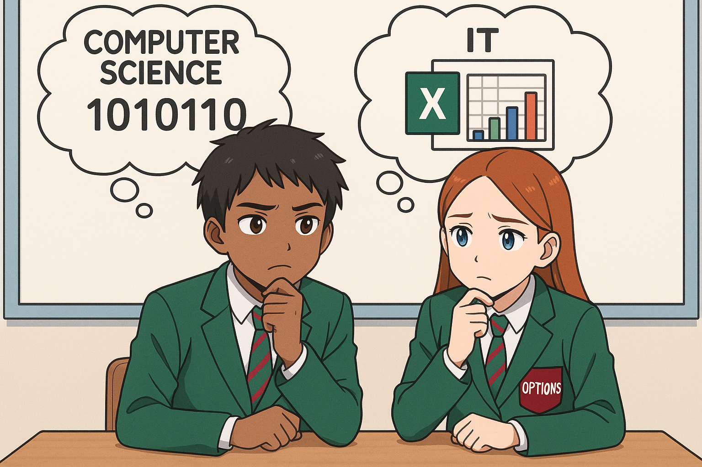

Lesson 3 – Using Numbers
Do Now

Let’s connect what we already know before learning something new!
True
A) Oval
B) Diamond
C) Rectangle
D) Circle
Diamond
Sending emails
What you’ll learn
By the end of this lesson, you will be able to:
- Convert a decimal number (0–255) to 8-bit binary.
- Convert a decimal number to hex (base 16).
- Build an Excel sheet that converts numbers to 8-bit binary.
How you’ll know you’ve got it:
- Your CS conversions match the correct binary/hex.
- Your IT spreadsheet shows the right 8 bits for 0–255.
- Extension: your sheet also shows the hex using VLOOKUP.
Knowledge Recap
🧠 Computer Science – Binary
Computers don’t understand normal numbers like we do — they use binary (only 0s and 1s). Each binary digit (bit) stands for a place value that doubles each time.
- Each 8 bits = 1 byte
- In one byte computers can count from 0 to 255.
- Each column is worth a different amount: 128, 64, 32, 16, 8, 4, 2, 1
Analogy: Imagine binary numbers as switches in the computer - if they are a 1 electricity can flow through.
📊 IT – Using Spreadsheets to Complete Calculations
Spreadsheets are large grids that are using to store and complete calculations with numbers.
Excel can do calculations for us, we just have to write the formulas.
- Each row in a spreadsheet is labelled with a number.
- Each column in a spreadsheet is labelled with a letter.
=A4+A5will add the values in the cells A4 and A5 together.
Key Vocabulary
- Binary
- Base-2 number system using 0 and 1 only.
- Bit
- A single binary digit (0 or 1).
- Byte
- 8 bits. Can store numbers 0–255.
- Spreadsheet
- A grid that allows numbers to be stored, and caclulations to be completed.
CS Activity – Convert Decimal to 8-bit Binary
Work with numbers from 0 to 255. Convert each to 8-bit binary. Watch the video tutorials first, then try the online quizzes.
- Get a whiteboard, pen and rubber.
- You have 5.5 minutes to complete as many questions as you can here: Binary to Denary Quiz
- Add a screenshot to your Class Notebook - under CS Activity.
IT Activity – Build an Excel Sheet: 0–255 → 8-bit Binary (Extension: Hex)
Create a spreadsheet that converts a decimal number to an 8-bit binary string. Then add an extension using VLOOKUP to show the hex value.
ExcelDemy – How to Convert Decimal to Binary in Excel
Try at least one method from the guide before completing your spreadsheet.
- In cell A2, type a number from 0 to 255 (try lots!).
- In cells B2:I2, show each bit (MSB → LSB) using formulas such as:
=INT(MOD($A2/128,2)),=INT(MOD($A2/64,2)), etc. - Join the bits into one 8-bit string in J2:
=TEXTJOIN("",TRUE,B2:I2) - (Alternative built-in) In K2:
=DEC2BIN($A2,8) - Extension – Hex with VLOOKUP:
- Create a small table (e.g. M2:N17) mapping 0–15 → 0–F.
- Compute nibbles:
=INT($A2/16)and=MOD($A2,16) - Lookup hex digits:
=VLOOKUP(L2,$M$2:$N$17,2,TRUE) - Combine:
=N2 & O2
| Cell | Example for A2 = 25 | Why |
|---|---|---|
| B2:I2 | 0 0 0 1 1 0 0 1 | 16 + 8 + 1 = 25 |
| J2 (TEXTJOIN) | 00011001 | Joined bits |
| L2/M2 | L2 = 1 M2 = 9 | High/low nibbles |
| N2/O2 (VLOOKUP) | N2 = “1” O2 = “9” | Hex digits found |
| P2 (Hex) | “19” | Final hex output |
Exit Ticket
- What number system do computers use?
- How many values can 1 byte store?
- Write the 8-bit binary for 13.
💡 Sample Answers
- Binary (base-2).
- 256 values (0–255).
- 0000 1101 (8+4+1 = 13).
Show All
This view expands all sections for printing/PDF. Use the toggles to show/hide sample tables.